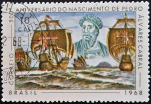

Descobrimento
"O dia 22 de abril de 1500 marcou oficialmente a chegada dos portugueses ao território brasileiro, e esse evento é muito conhecido como “descobrimento do Brasil”."
Rota de Cabral até o descobrimento:
- 9 de março: zarparam de Lisboa.
- 14 de março: passaram pelas Ilhas Canárias.
- 22 de março: passaram por Cabo Verde.
- 23 de março: desaparecimento da nau de Vasco Ataíde.
- 29 e 30 de março: adentraram a região de calmaria na zona equatorial.